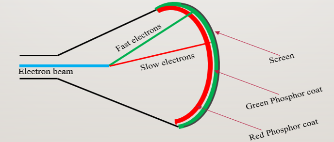
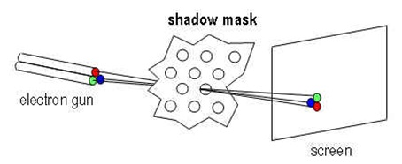
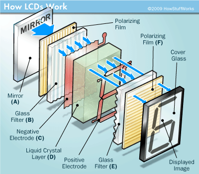
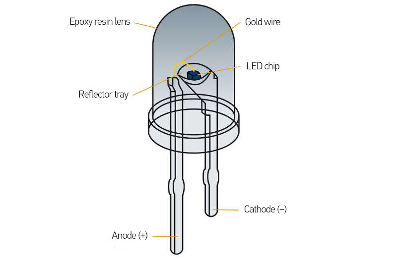

Computer Graphics
Lecture 5
Saprativa Bhattacharjee
- Video display devices
- Color CRT
- Flat panel displays
- VGA
- Beam-penetration method
- Shadow-mask method
Beam-penetration method
https://1.bp.blogspot.com/-OOwRAePS4wM/XoN4m0_Q5xI/AAAAAAAABw0/K3hBvh6i3LUd08dkH4g9sTbXs-07lqw2gCPcBGAYYCw/s1600/Capture.PNG
Shadow-mask method
https://kamaleclass.files.wordpress.com/2014/01/sm-1.jpg
- Emissive displays
- Non-emissive displays
LCDs
https://www.xenarc.com/images/CKEDIT/lcd-screen.gif
LEDs
https://www.hella.com/techworld/assets/images/S43_1_en.jpg